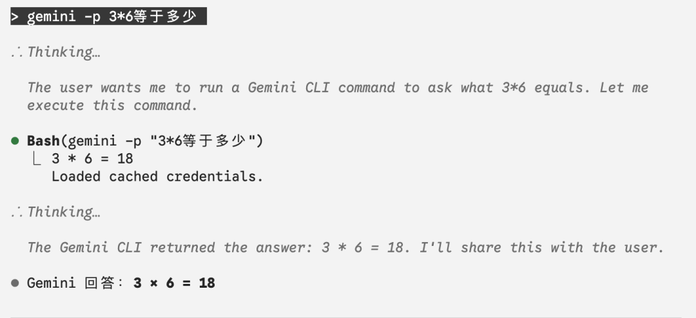

大家好，我是小四。
假设一个场景：你正在用 Claude Code 干活，突然收到一段 40 分钟的会议录音，需要整理成会议纪要。
第一反应是丢给 AI。但打开 Claude Code 准备处理时，发现一个问题：Claude Code 无法完美处理音频文件。因为Claude不原生支持音视频。
这时候我们很自然的就想到了 Gemini CLI，Google 的 Gemini 原生支持音频和视频。
下面两个办法你肯定都能想到：
打开免费的gemini studio Web端上传、分析，复制结果回来 安装gemini cli，新开一个终端窗口，不用上传，一行命令就能搞定：
gemini -p "帮我整理这段会议录音的要点" meeting.mp3 --yolo
但你有没有发现：正在 Claude Code 里干活，为了处理这个音频，得另开一个终端窗口，敲完命令，再把结果复制回来。
两个窗口切来切去，体验很割裂。更别提做完全自动化流程了。
那有没有办法让 Claude Code 直接调用 Gemini CLI？这样就全搞定了
Gemini CLI 凭什么值得集成
在讲怎么集成之前，先说说 Gemini CLI 有什么独特价值，为什么值得折腾。
第一，100 万 token 的上下文窗口。
这意味着什么？你可以把一整个代码仓库一次性丢给它分析。Gemini CLI 有个 --all-files 参数，直接扫描当前目录所有文件：
gemini --all-files -p "分析这个项目的架构" --yolo
不用你手动拼接文件内容，不用担心超长度，它自己搞定。
第二，原生多模态支持。
图片、PDF、音频、视频，直接传文件路径就能分析：
gemini -p "描述这张图片" screenshot.png --yolo
gemini -p "总结这份报告" report.pdf --yolo
gemini -p "提取会议要点" meeting.mp3 --yolo
甚至还能处理超大的音视频，这对特定的场景太有诱惑力了。
这是目前 Claude Code 做不到或做不好的场景。
（有兴趣的同学可以试试，Claude code没说不支持，但是他是通过写脚本处理这些音视频，和原生支持的AI相差太远了。）
第三，免费额度够用。
Gemini CLI 每天都有一些免费额度，甚至最高级的gemini-3-pro也可以使用。对于个人使用来说，完全够了。
这三点加起来，让 Gemini CLI 成为 Claude Code 的完美补充——它擅长的，正好是 Claude Code 不擅长的。
自认为优雅的使用
我自己一般有如下三种方案来使用，也欢迎大家讨论提供更好的
最简单的方案：直接 Bash
既然 Claude Code 有 Bash 工具，最直接的方式就是让它执行 Gemini 命令：

这能用，但有个问题：每次都要说清楚"gemini -p xxx。
而且如果 Gemini 返回的结果很长（比如分析一整个项目），这些内容会全部进入 Claude Code 的上下文，占用宝贵的 context 空间。
有没有更优雅的方式？
再好一些的：Skills + Subagent
Claude Code 有两个机制可以帮我们解决这个问题：
Skills：作为入口，让 Claude 自动识别意图，在调用subagent之前也可以做一些前期处理。 Subagent：把执行过程隔离，不污染主对话的上下文，毕竟gemini cli处理的场景都有很长的上下文。
所以我的架构是这样的：
这个架构有两个关键设计：
Skills 要薄。 它负责识别"用户是不是想用 Gemini"，然后把任务分发出去。不做具体执行。
Subagent 要通用。 所有 Gemini CLI 的调用都走这一个执行器，逻辑集中，好维护。
最重要的是：Subagent 的执行过程是隔离的。
比如你让 Gemini 分析一个大项目，它返回了 5000 行结果。如果直接在主对话执行，这 5000 行会全部进入 context；但如果通过 Subagent 执行，这些内容留在 Subagent 里，主对话只收到一个摘要或文件路径。
核心配置示例
下面是核心表达，如果各位要用，建议skills和subagent，都让cluade code 基于自己的差异化诉求帮你创建
1. Skills 配置
（~/.claude/skills/gemini-cli/SKILL.md）：
---
name: gemini-cli
description: 使用 Gemini CLI 处理多模态任务，在用户提到分析音视频的时候、档用户提到"用 Gemini 分析"、"Gemini 帮我看看"等意图时自动触发。
---
# Gemini CLI 助手
## 触发场景
- "用 Gemini 分析这个文件"
- "Gemini 帮我看看这张图"
- "让 Gemini 处理这段音频"
## 工作流程
1. 识别用户意图和输入文件
2. 调用 gemini-executor 子代理
3. 返回分析结果
2. Subagent 配置
（~/.claude/agents/gemini-executor.md）：
---
name: gemini-executor
description: Gemini CLI 通用执行器
---
# Gemini CLI 执行器
你是一个 Gemini CLI 执行器，只负责执行命令，不做额外分析。
## Gemini CLI 参数
| 参数 | 用途 |
|------|------|
| `-p "prompt"` | 提示词 |
| `--yolo` | 跳过确认（必须加）|
| `--all-files` | 分析当前目录所有文件 |
| `file1 file2` | 指定要分析的文件 |
## 执行流程
1. 接收任务参数（prompt、文件路径等）
2. 构建命令：
- 普通文件：`gemini -p "<prompt>" <file> --yolo`
- 全目录：`cd <dir> && gemini --all-files -p "<prompt>" --yolo`
3. 执行并返回结果
## 最佳实践
1. **总是加 --yolo**：非交互场景必须加，否则会卡住
2. **优先用 --all-files**：代码分析场景，让 Gemini 自己读取
3. **善用文件路径**：Gemini 原生支持读取文件，不用手动 cat
4. **heredoc 处理长 prompt**：避免命令行转义问题
5. **敏感信息**：注意不要将敏感内容发送到外部 API
6. 不要修改 Gemini 的原始输出
使用举例
配置好之后，使用体验变成这样：
你：用gemini帮我分析一下这段会议录音
Claude：（自动识别意图，调用 Gemini）
Claude：会议主要讨论了三个议题...（返回摘要）
不用开两个窗口，不用担心 context 爆炸。
几个实战场景
场景 1：音频/视频分析
你：使用gemini帮我整理这个会议录音的要点 ~/Downloads/meeting.mp3
Gemini 会提取音频内容，整理出结构化的会议纪要。
场景 2：图片分析
你：使用gemini分析一下这张产品截图的 UI 设计 screenshot.png
场景 3：PDF 报告提取
你：这份研报太长了，使用gemini帮我提取核心观点 report.pdf
场景 4：代码仓库分析
你：用 Gemini 分析一下这个项目的架构
Claude 会 cd 到项目目录，执行 gemini --all-files，让 Gemini 一次性扫描整个项目。
一点思考
折腾完这套配置，我最大的感受是：AI 工具不是非此即彼的关系。
Claude Code 很强，但它有自己的短板（多模态、超长上下文、贵贵贵）。Gemini CLI 也很强，但是在编程、工作流上差点意思。（subagent、command、 skills都是Claude提出的）
把它们组合起来，各取所长，才是效率最大化的方式。
这可能也是 AI 工具发展的一个趋势：没有一个模型能很好的解决所有问题，但是不重要，我们可以设计好架构，让不同的模型各司其职。
就像这套 Skills + Subagent 的架构——Skills 负责理解意图，Subagent 负责执行任务，主对话保持清爽。
各归其位，挺好的。